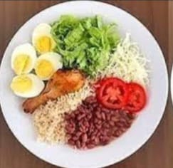

Sobre mim
Oi,sou Souza Ferreira, estou començando uma nova jornada da minha vida. Quero percorrer um novo caminha, e escolhi a área da programação, espero ter bons resultados nesse novo percurso.
Como acabar com a fome no mundo? Praga, fome, guerra...Segundo Yuval Harari, esses grandes problemas da humanidade deixaram de ser as maiores causas de morte no mundo, dando lugar a outras causas de mortalidade hoje muito mais relevantes: câncer, doenças cardiovasculares e respiratórias.
Em meio a esse cenário todo, acabamos esquecendo que a fome, praga e guerra ainda existem, e com força em diversos países. Na pandemia do COVID-19, um problema em especial foi intensificado: falta de alimentos.
Não é só África, como costumamos ouvir, mas no próprio Brasil, que voltou ao mapa da fome. A desnutrição e a fome ainda são grandes problemas encontrados nas favelas brasileiras, por exemplo, e não podemos ignorá-los.
Quais são as soluções? Afinal, como erradicar a fome mundial? Tantas crianças com fome, o que fazer para ajudá-las?
A fome no mundo cresceu nos últimos dois anos, alcançando quase 10% da população. Mesmo assim, cerca de 17% dos alimentos produzidos no planeta são desperdiçados
As causas da escassez e o aumento dos preços dos alimentos são diversos e levam a várias abordagens. Um dos fatores que mais se destaca como principal agente da diminuição de oferta de alimentos está ligado ao setor energético, mais precisamente os biocombustíveis.
Reduzir a perda de alimentos ao longo da sua cadeia produtiva e melhorar a logística de distribuição A perda de alimentos é a diminuição da quantidade ou qualidade dos alimentos provocados por ações dos fornecedores de alimentos no processo de produção e transporte até a chegada aos mercados.
Nos próximos anos a população vai aumentar. A previsão é que em 2050 cheguemos a 9 bilhões de pessoas vivendo na Terra. Isso significa que mesmo resolvendo o problema das perdas e desperdícios, precisaremos produzir mais comida para alimentar todo mundo.
Panela Cheia Salva
Ação Emergencial Amigos do Bem
Combate à Fome
Oi,sou Souza Ferreira, estou començando uma nova jornada da minha vida. Quero percorrer um novo caminha, e escolhi a área da programação, espero ter bons resultados nesse novo percurso.